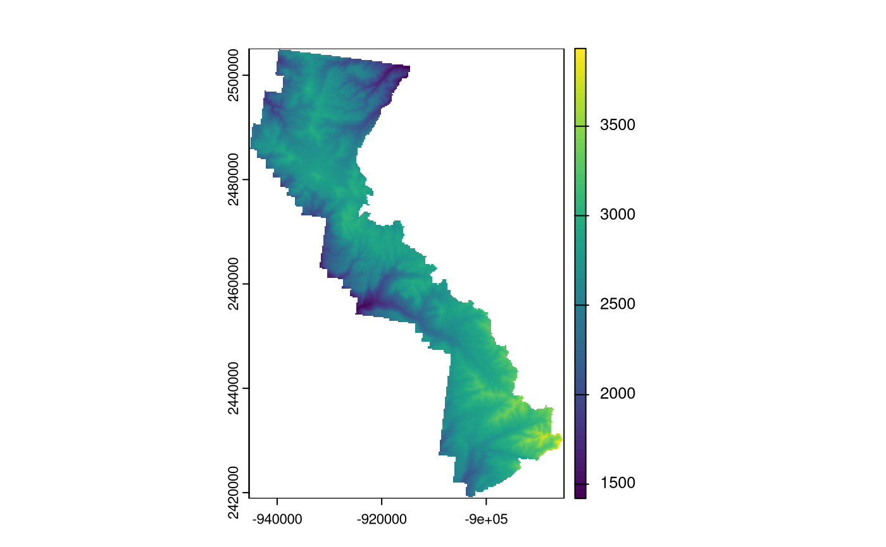

Subsets a raster to the extent or masked boundary of a spatial polygon object or shapefile (*.shp), with option to write the new file to the outfolder with specified format (fmt).
Usage
spClipRast(
rast,
rastfolder = NULL,
clippolyv,
clippolyv_dsn = NULL,
clippolyv.filter = NULL,
rast.crs = NULL,
bands = NULL,
NODATA = NULL,
buffdist = NULL,
validate = FALSE,
maskByPolygons = TRUE,
showext = FALSE,
fmt = "GTiff",
compress = FALSE,
compressType = "DEFLATE",
outfolder = NULL,
outfn = "rastclip",
outfn.pre = NULL,
outfn.date = FALSE,
overwrite = FALSE
)Arguments
- rast
String or Raster. Raster name, including extension. Option to include full path.
- rastfolder
String. Name of the raster folder. Optional.
- clippolyv
SpatialPolygons class R object or String. Name of the polygon spatial layer to use for clipping.
- clippolyv_dsn
String. The data source name (dsn; i.e., pathname or database name) of clippolyv. The dsn varies by driver. See gdal OGR vector formats (https://www.gdal.org/ogr_formats.html). Optional if polyv_layer is an R object.
- clippolyv.filter
String. Filter to subset clippolyv spatial layer.
- rast.crs
EPSG code or PROJ.4 string. Defined coordinate reference system if rast has no crs defined.
- bands
Numeric vector. If rast is a multi-layer raster and only 1 or some layers are desired, specify layer number(s) in a vector format. If NULL, all layers are summed.
- NODATA
Number. The NODATA value for background values. If NODATA is NULL, and a NODATA value is defined on the input raster, the default is the defined NODATA value, else it is defined based on its datatype (see DEFAULT_NODATA for default data values).
- buffdist
Number. The distance to buffer the polygon before clipping raster. Uses sf::st_buffer. The distance is based on units of the raster.
- validate
Logical. If TRUE, validates polyv and clippolyv before clipping. Uses sf::st_make_valid with default parameters (geos_method='valid_structure', geos_keep_collapsed=FALSE).
- maskByPolygons
Logical. If TRUE, rast is clipped to boundary of polygon. If FALSE, rast is clipped to extent of polygon.
- showext
Logical. If TRUE, layer extents are displayed in plot window.
- fmt
String. Format for exported raster. Default is format of unput raster. ("raster", "ascii", "SAGA", "IDRISI", "CDF", "GTiff", "ENVI", "EHdr", "HFA", "VRT"). VRT is a virtual raster (See note below).
- compress
Logical. If TRUE, compress the final output.
- compressType
String. An optional compression type ('LZW', "DEFLATE', "PACKBITS'). Note: If format = 'HFA', a default compression type is used.
- outfolder
String. The output folder.
- outfn
String. Name of output data file. If NULL, default is 'rastclip'. If no extension, a default is provided to match output format.
- outfn.pre
String. Add a prefix to output name (e.g., "01").
- outfn.date
Logical. If TRUE, add date to end of outfile (e.g., outfn_'date'.csv).
- overwrite
Logical. If TRUE, overwrite files in outfolder.
Value
- value
Spatial S4 object. A clipped raster file.
The clipped raster is written to outfolder with specified format or same format as input raster.
Details
Use spClipRast() to prompt for input.
If the projection of polyv is different than the projection of rast, the polyv SpatialPolygons object is converted to the projection of rast (See note about on-the-fly projection conversion).
Note
On-the-fly projection conversion
The spTransform (sf) method is
used for on-the-fly map projection conversion and datum transformation using
PROJ.4 arguments. Datum transformation only occurs if the +datum tag is
present in the both the from and to PROJ.4 strings. The +towgs84 tag is used
when no datum transformation is needed. PROJ.4 transformations assume NAD83
and WGS84 are identical unless other transformation parameters are
specified. Be aware, providing inaccurate or incomplete CRS information may
lead to erroneous data shifts when reprojecting. See spTransform help
documentation for more details.
VRT format Virtual raster format is a pointer to a temporary file, commonly used as an intermediate step between processes. The VRT format ignores option to maskByPolygons.
Examples
# \donttest{
# Get polygon vector layer from FIESTA external data
WYbhdistfn <- system.file("extdata",
"sp_data/WYbighorn_districtbnd.shp",
package = "FIESTA")
WYbhdist <- FIESTA::spImportSpatial(WYbhdistfn)
WYbhdist
#> Simple feature collection with 3 features and 4 fields
#> Geometry type: POLYGON
#> Dimension: XY
#> Bounding box: xmin: -108.0056 ymin: 44.01989 xmax: -106.8408 ymax: 45.00134
#> Geodetic CRS: NAD83
#> REGION FORESTNUMB DISTRICTNU DISTRICTNA
#> 1 02 02 03 Medicine Wheel Ranger District
#> 2 02 02 01 Powder River Ranger District
#> 3 02 02 06 Tongue Ranger District
#> geometry
#> 1 POLYGON ((-107.6484 44.9788...
#> 2 POLYGON ((-106.9407 44.4999...
#> 3 POLYGON ((-107.6296 44.9795...
# Get raster layers from FIESTA external data
demfn <- system.file("extdata",
"sp_data/WYbighorn_dem_250m.img",
package = "FIESTA")
# Clip raster to district = '03'
dem03 <- spClipRast(rast = demfn,
clippolyv = WYbhdistfn,
clippolyv.filter = "DISTRICTNU == '03'",
overwrite = TRUE,
outfolder = tempdir())
#> filter removed 2 records: DISTRICTNU == '03'
#> /home/runner/work/_temp/Library/FIESTA/extdata/sp_data/WYbighorn_dem_250m.img
#> reprojecting layer...
#> from: NAD83
#> to: PROJCS["North_American_1927_Albers",GEOGCS["NAD27",DATUM["North_American_Datum_1927",SPHEROID["Clarke 1866",6378206.4,294.9786982,AUTHORITY["EPSG","7008"]],AUTHORITY["EPSG","6267"]],PRIMEM["Greenwich",0],UNIT["Degree",0.0174532925199433]],PROJECTION["Albers_Conic_Equal_Area"],PARAMETER["latitude_of_center",23],PARAMETER["longitude_of_center",-96],PARAMETER["standard_parallel_1",29.5],PARAMETER["standard_parallel_2",45.5],PARAMETER["false_easting",0],PARAMETER["false_northing",0],UNIT["metre",1,AUTHORITY["EPSG","9001"]],AXIS["Easting",EAST],AXIS["Northing",NORTH]]
#> rast is not completely contained within clippolyv
#> ...intersection of 49.956%
#> initializing destination raster...
#> clipping to polygon layer...
#> output written to: /tmp/RtmpCiMf0x/rastclip.tif
terra::plot(terra::rast(dem03))

# Clip raster to district = '06'
dem06 <- spClipRast(rast = demfn,
clippolyv = WYbhdistfn,
clippolyv.filter = "DISTRICTNU == '06'",
overwrite = TRUE,
outfolder = tempdir())
#> filter removed 2 records: DISTRICTNU == '06'
#> /home/runner/work/_temp/Library/FIESTA/extdata/sp_data/WYbighorn_dem_250m.img
#> overwriting /tmp/RtmpCiMf0x/rastclip.tif...
#> reprojecting layer...
#> from: NAD83
#> to: PROJCS["North_American_1927_Albers",GEOGCS["NAD27",DATUM["North_American_Datum_1927",SPHEROID["Clarke 1866",6378206.4,294.9786982,AUTHORITY["EPSG","7008"]],AUTHORITY["EPSG","6267"]],PRIMEM["Greenwich",0],UNIT["Degree",0.0174532925199433]],PROJECTION["Albers_Conic_Equal_Area"],PARAMETER["latitude_of_center",23],PARAMETER["longitude_of_center",-96],PARAMETER["standard_parallel_1",29.5],PARAMETER["standard_parallel_2",45.5],PARAMETER["false_easting",0],PARAMETER["false_northing",0],UNIT["metre",1,AUTHORITY["EPSG","9001"]],AXIS["Easting",EAST],AXIS["Northing",NORTH]]
#> rast is not completely contained within clippolyv
#> ...intersection of 42.117%
#> initializing destination raster...
#> clipping to polygon layer...
#> output written to: /tmp/RtmpCiMf0x/rastclip.tif
# Plot extracted values of national forest district
terra::plot(terra::rast(dem06))
# }